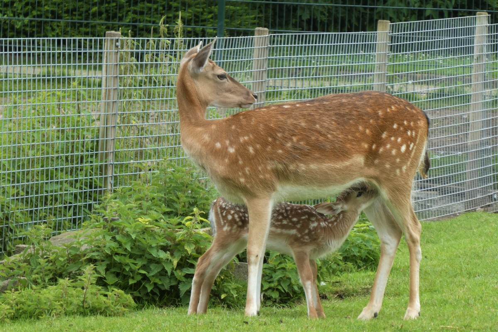

Ala geyik, Orta Doğu, Anadolu ve Kafkasya’nın bozkır ve ormanlık bölgelerinde yaşayan, kahverengi üzerine beyaz benekli kürküyle tanınan zarif bir geyik türüdür; erkekleri dallı ve gösterişli boynuzlara sahipken dişiler boynuzsuzdur, sürüler halinde dolaşır ve otçul beslenir; ortalama 15–20 yıl yaşar ve 150 kg’a kadar ağırlığa ulaşabilir; yazın açık kahverengi ve beyaz benekli kürkleriyle dikkat çekerken kışın daha koyu ve kalın kürkleriyle soğuk iklimlere uyum sağlar; Türkiye’de özellikle Antalya, Muğla ve Karadeniz’in bazı bölgelerinde doğal yayılış gösterir, geçmişte avlanma ve habitat kaybı nedeniyle sayıları azalmış olsa da koruma altına alınarak yeniden çoğaltılmaya çalışılmaktadır; kültürel açıdan ise Anadolu’da bereket ve zarafetin sembolü olarak görülür.